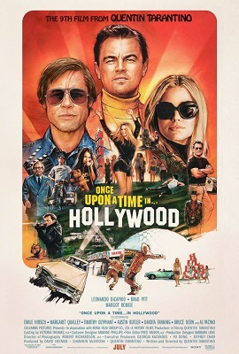

|  | |||
Knives out: When a popular mystery writer turns up dead in his mansion, renowned private detective Benoit Blanc investigates, revealing that every member of the eccentric author’s family, as well as his nurse, is a murder suspect. |
Once upon a time... In hollywood: In Los Angeles in 1969, aging TV star Rick Dalton and his longtime stunt double Cliff Booth struggle to make their way around an industry and a city they hardly recognize anymore. |
Parasite: Greed, class discrimination and a mysterious interloper threaten the newly formed symbiotic relationship between the wealthy Park family and the destitute Kim clan. |
Joker: In Gotham’s fractured society, a young man longs to be a stand-up comic, but finds the joke is always on him. Caught in a cycle of apathy, cruelty and ultimately, betrayal, the comedian makes one bad decision after another, bringing about a chain reaction of escalating events. |